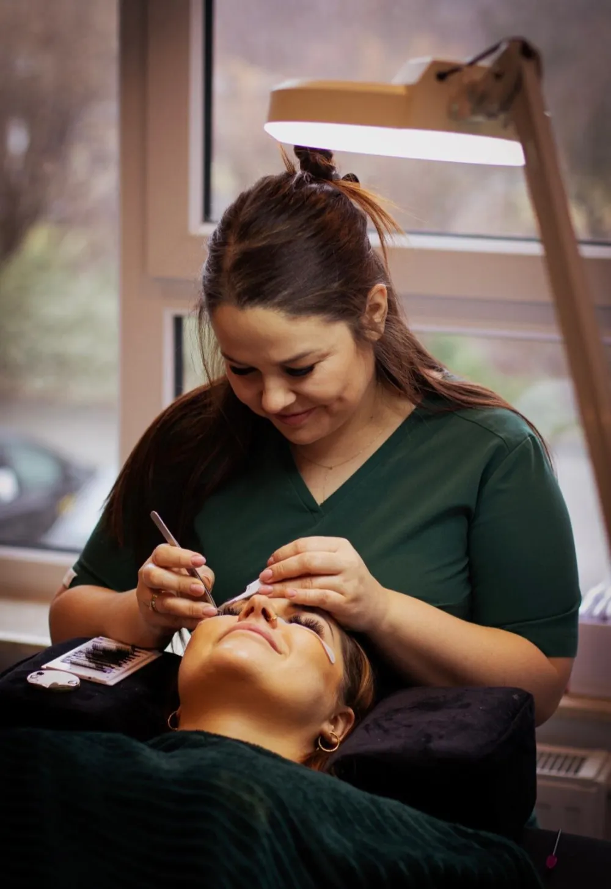
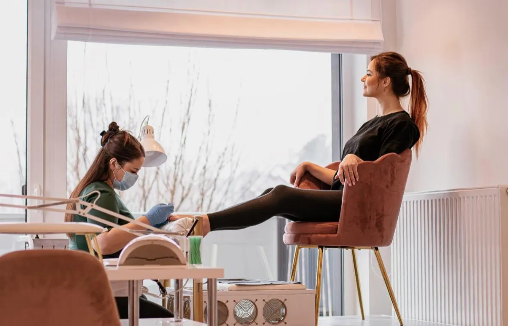
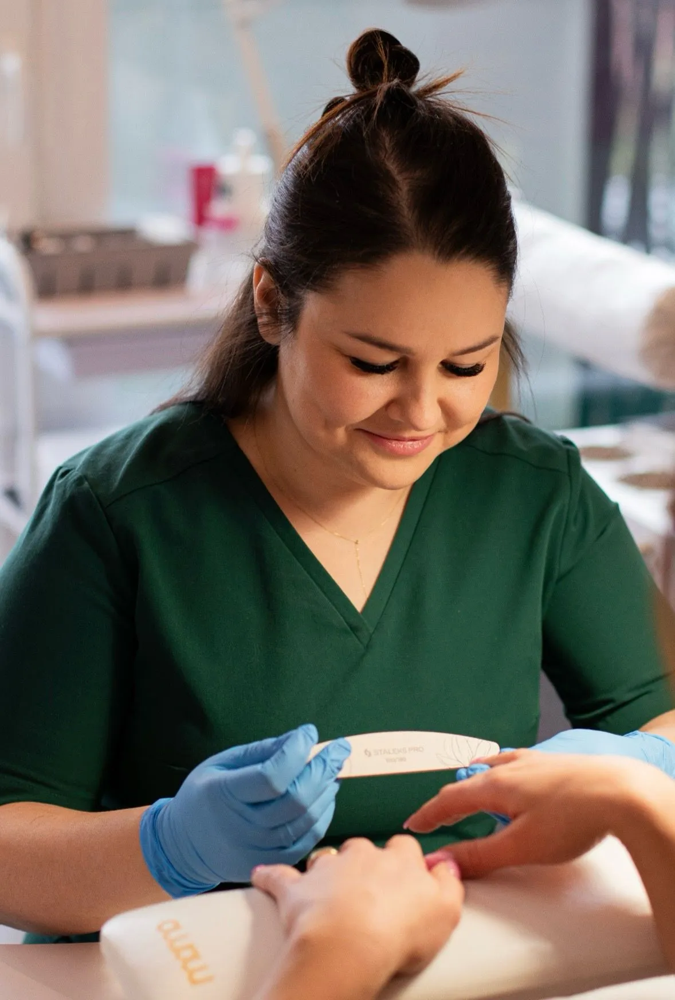
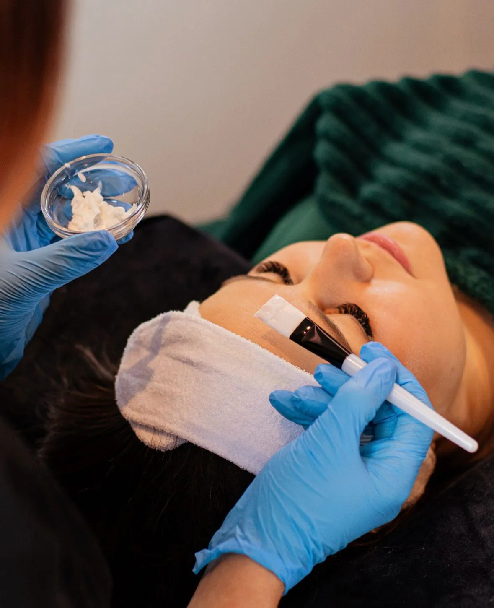
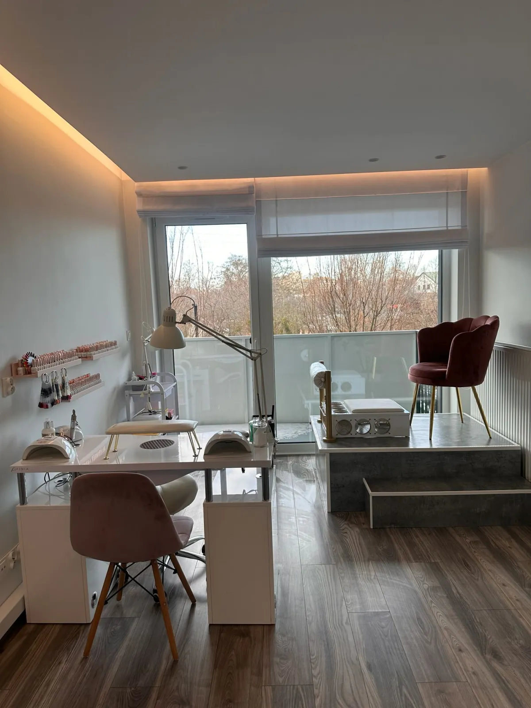
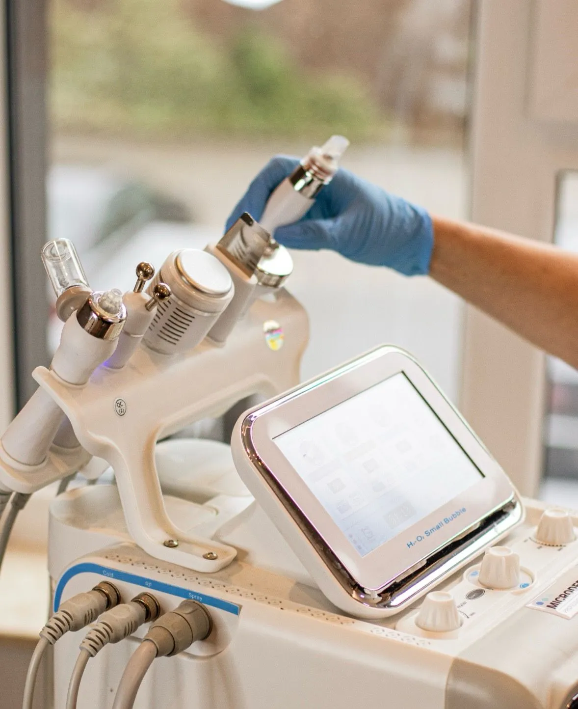
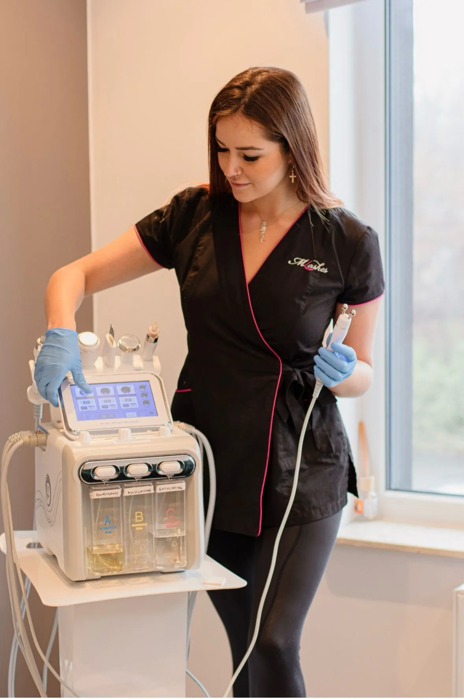
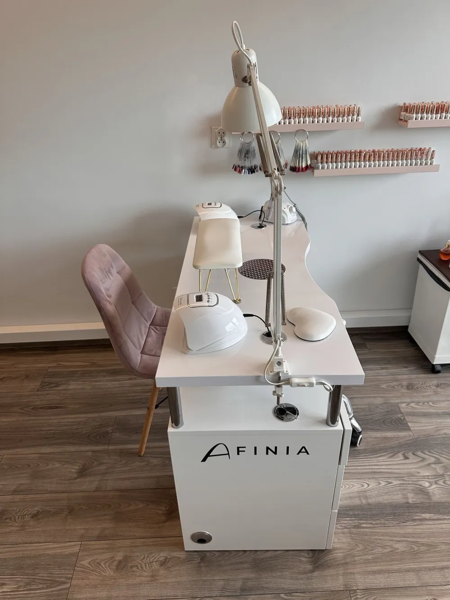

Salon kosmetyczny we WrocławiuRoyal Beauty Studio Urody
Przedłużamy i laminujemy rzęsy, robimy manicure i pedicure hybrydowy, depilację woskiem oraz zabiegi na twarz, od oczyszczania wodorowego po mezoterapię mikroigłową.
- Najbliższy wolny termin
- wtorek, 20 października
- Telefon
- +48 793 355 756

Royal Beauty to kameralne studio urody. Przyjmujemy po wcześniejszym umówieniu, więc na wizycie jesteś tylko Ty i nikt nie czeka w kolejce.
Termin dopasowujemy do Ciebie: także wieczorem, w sobotę i w niedzielę, codziennie od 9:00 do 21:00. Na każdą wizytę rezerwujemy tyle czasu, ile wymaga zabieg. Jeśli nie wiesz, co wybrać, zacznij od bezpłatnej konsultacji z kosmetologiem.
Kto Cię przyjmie
Paulina
Właścicielka, magister kosmetologii
Zabiegi na twarz, rzęsy i brwi, manicure i pedicure, depilacja
Salon od środka






Opinie klientek
Tu wstawimy prawdziwą opinię z wizytówki Google, z imieniem i datą.
Miejsce na 2–3 prawdziwe opinie (decyzja właścicielki, patrz docs/seo-plan.md)Druga opinia, najlepiej o innym zabiegu niż pierwsza, np. o rzęsach lub paznokciach.
Częste pytania
Nie ma Twojego pytania? Zadzwoń, odpowiemy od ręki.
Ile kosztuje przedłużanie rzęs?
Przedłużanie rzęs kosztuje od 150 zł (metoda 1:1) do 210 zł (objętość 5/6:1) i trwa od 105 do 135 minut. Uzupełnienie kosztuje od 130 do 190 zł. Pełny cennik rzęs i brwi znajdziesz wyżej, w sekcji Rzęsy i brwi.
Czy mogę najpierw przyjść na konsultację?
Tak. Bezpłatna konsultacja z kosmetologiem trwa około 30 minut. Kosmetolog oceni stan skóry i doradzi, który zabieg będzie dla Ciebie najlepszy. Konsultację rezerwujesz tak samo jak każdy zabieg.
Kiedy mogę się umówić?
Przyjmujemy po wcześniejszym umówieniu, codziennie od 9:00 do 21:00, także w soboty i niedziele. Termin dopasowujemy do Ciebie, więc łatwo umówić się po pracy albo w weekend. Wolne godziny widzisz w formularzu rezerwacji. Jeśli żadna nie pasuje, zadzwoń.
Kiedy mogę zrobić depilację laserową?
Laser jest w salonie mniej więcej co 6 tygodni, najbliżej 8 i 9 listopada. Depilację laserową wykonuje się w serii zabiegów co kilka tygodni, więc kolejny termin umówisz od razu po wizycie. W formularzu zabiegi laserowe można zarezerwować tylko na dni, w które laser jest w salonie.
Jak zarezerwować wizytę?
Wybierz zabieg, dzień i godzinę w formularzu rezerwacji. Pokazujemy tylko wolne terminy. Potwierdzimy wizytę e-mailem w ciągu 24 godzin. Możesz też zadzwonić: +48 793 355 756 lub +48 792 646 256.
Jak odwołać lub przełożyć wizytę?
W e-mailu z potwierdzeniem rezerwacji jest link do odwołania wizyty. Wystarczy go kliknąć i potwierdzić. Jeśli chcesz przełożyć termin, zadzwoń do salonu, a znajdziemy nowy.
Ile trwa manicure hybrydowy i ile kosztuje?
Manicure hybrydowy trwa około 75 minut i kosztuje 120 zł, a w wersji french lub baby boomer 130 zł. Usunięcie starej hybrydy kosztuje 40 zł, a z zabezpieczeniem płytki 90 zł.
Rezerwacja wizyty
- Wybierz zabieg.
- Wybierz dzień. Pokażemy tylko wolne godziny, a dla depilacji laserowej tylko dni z laserem.
- Potwierdzimy wizytę e-mailem w ciągu 24 godzin.

Jak do nas trafić
Royal Beauty Studio Urodyul. Małopanewska 24B/5
54-212 Wrocław
+48 793 355 756
+48 792 646 256
Przyjmujemy po wcześniejszym umówieniu
codziennie 9:00–21:00, także w weekendy
Najbliższy wolny termin: wtorek, 20 października